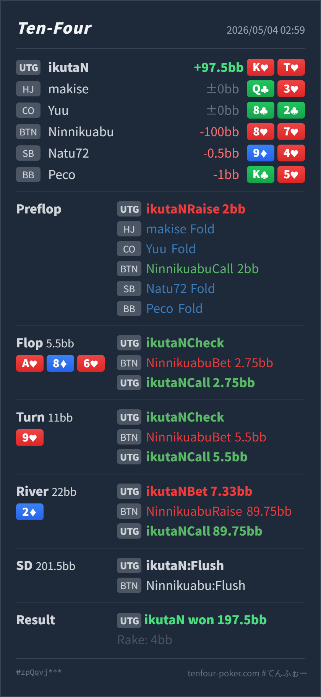

Preflop
良いK♥T♥ は UTG open に入る suited broadway です。
GTO基準で、UTG K♥T♥ の 2BB open は自然です。flop A♥ 8♦ 6♥ で check し、BTN の 1/2 pot bet に call した判断も、nut flush draw を持つので問題ありません。turn 9♥ で Hero は K♥T♥ の nut flush になっており、check-call は trap として成立します。改善余地があるのは、BTN に lower flush / straight / two pair が多く残るため、turn で一部 check-raise を混ぜて pot を作る発想も持つことです。river 2♦ の small lead は良く、巨大 raise への call は必須です。
K♥ T♥8♥ 7♥A♥ 8♦ 6♥ / 9♥ / 2♦K♥ を持つ nut flush なので、ほぼ降りる理由がありません。K♥ T♥8♥ 7♥2BB, HJ fold, CO fold, BTN call, SB fold, BB foldA♥ 8♦ 6♥ / 9♥ / 2♦5.5BB, UTG Hero check, BTN bet 2.75BB, Hero call11BB, UTG Hero check, BTN bet 5.5BB, Hero call22BB, UTG Hero bet 7.33BB, BTN raise 89.75BB, Hero call197.5BB, rake 4BB
良いK♥T♥ は UTG open に入る suited broadway です。
A♥ 8♦ 6♥良い
Hero は pair なしですが、K♥T♥ の nut flush draw です。
9♥良い / raise も有力
Hero は nut flush です。かなり強く、stack を入れられる hand です。
2♦良い
Hero は引き続き nut flush です。
| 論点 | その場で置いた見立て | どこがズレやすいか | 次回の基準 |
|---|---|---|---|
| turn の nut flush | 強すぎるので check-call で隠したい | trap は成立します。ただし A♥8♦6♥9♥ は BTN 側に lower flush、T7/75、two pair、pair+heart が多く、今すぐ大きく取れる hand もあります。 | nut flush は slowplay 固定にせず、相手の強い second-best が多い board では check-raise も候補に入れる |
| river の巨大 raise | flush 同士がありそうで怖い | Hero は K♥T♥ で、board の A♥ と合わせて nut flush です。board は paired しておらず、full house もありません。 | river raise を受けたら、まず自分の役が nut かを確認する。nut ならサイズに関係なく call する |
| ストリート | その時点の見え方 | 実ハンドの位置づけ | 評価 | その場の一手 |
|---|---|---|---|---|
| Preflop | UTG first-in は tight ですが、2BB open なら suited broadway は十分入ります。BTN は IP で広めに call できますが、UTG 相手なので下側 suited connector は境界です。 | K♥T♥ は UTG open に入る suited broadway です。 | 良い | 2BB open で問題ありません。 |
Flop A♥ 8♦ 6♥ | UTG は Ax と強い overpair / broadway を多く持ちます。BTN は 88/66/86s/87s/75s や heart draw も持ちます。 | Hero は pair なしですが、K♥T♥ の nut flush draw です。 | 良い | check-call は自然です。小さく c-bet する候補もありますが、1/2 pot に対して fold はしません。 |
Turn 9♥ | flush が完成し、T7/75 の straight も見えます。BTN 側は bet できる lower flush と made hand を多く持てます。 | Hero は nut flush です。かなり強く、stack を入れられる hand です。 | 良い / raise も有力 | check-call は trap として良いです。相手が lower flush や straight を降りにくいなら、ここで check-raise して pot を大きくする選択も強いです。 |
River 2♦ | blank で、turn の強い range はほぼそのまま残ります。BTN は lower flush や straight を value / bluff-catch として扱いやすいです。 | Hero は引き続き nut flush です。 | 良い | 7.33BB の small lead はかなり良いです。check-back される lower flush / straight から取りつつ、raise を誘えます。raise された後は当然 call です。 |
K♥T♥ は A♥ が board にあると、heart が完成した時に nut flush になります。8♥7♥ の lower flush で river small lead に巨大 raise するなら、この相手には nut 級を小さく lead して raise を誘うラインがかなり刺さります。